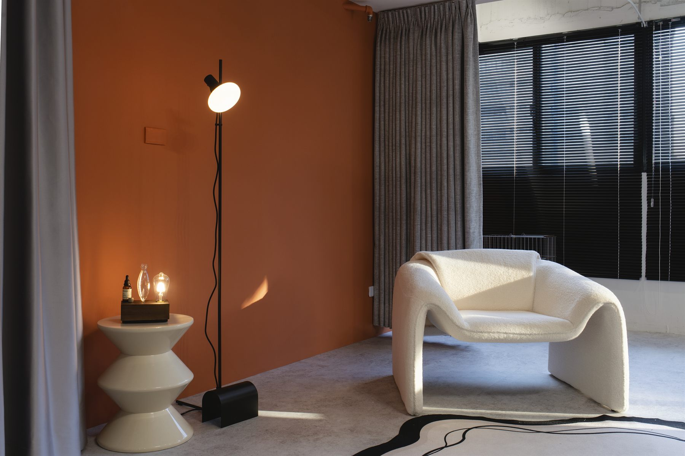
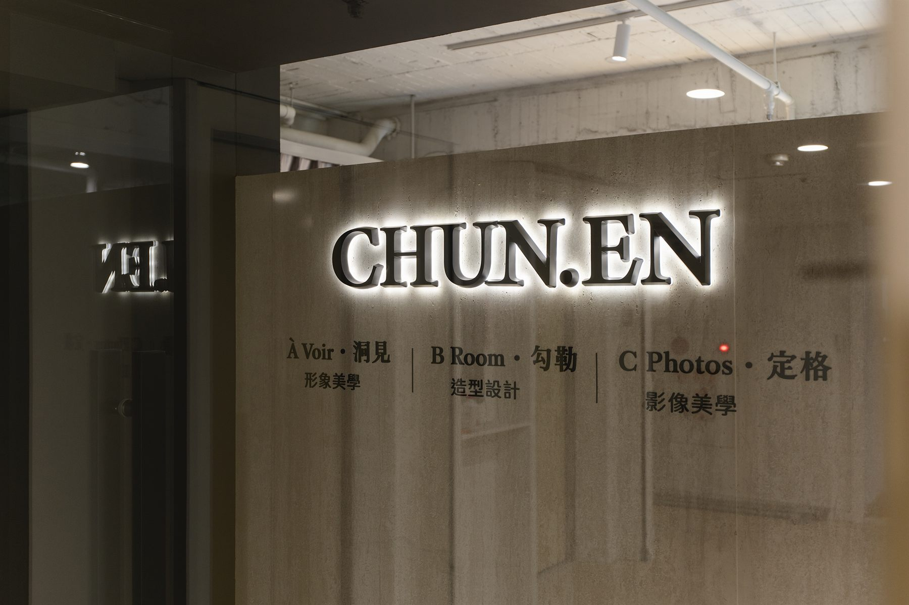
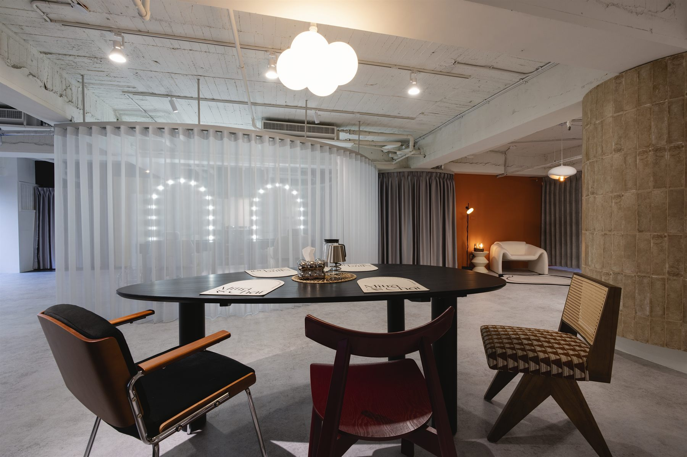
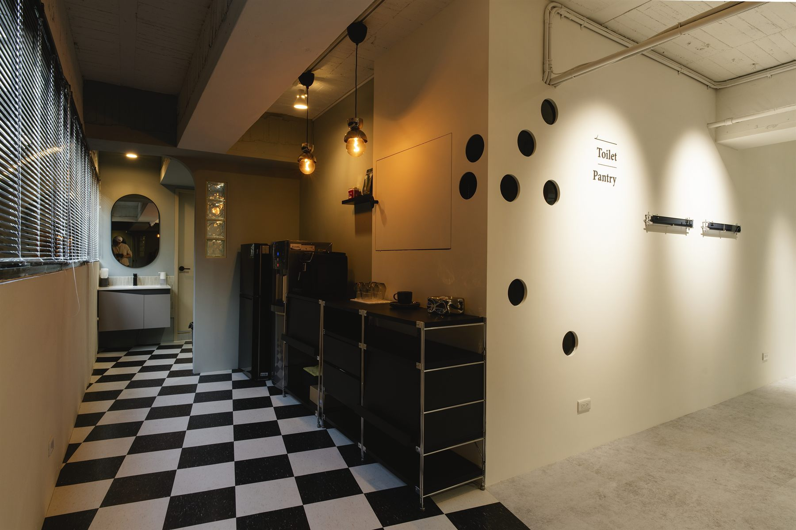

職業升級
Job Upgrade
升遷、轉職、跨域、接觸更高層級客戶
你的形象需要同步進入下一個版本。
Service Combo · 服務組合
À Voir 形象定位 ＋ B Room 妝髮 ＋ C Photos 形象照

Three studios, one coherent system.
CHUN.EN 形象美學整合三大專業—— À Voir 洞見、 B Room 勾勒、 C Photos 定格。
我們不是讓客戶在不同工作室之間反覆溝通，而是由同一團隊承接同一份理解——從形象定位、妝髮設計到影像呈現，讓每一次對外曝光都能維持一致、清楚且具有辨識度的專業感。
很多人已經具備足夠的經驗、能力與價值，卻在照片、穿搭、妝髮、社群、官網與簡報中，沒有呈現出與實際專業相符的信任感。
CHUN.EN 協助你做的，不只是外在調整——而是把形象整理成一套能支撐你職業角色與商業曝光的視覺策略。
Beyond a photoshoot. A complete image system.
不是拍一組形象照，
而是建立一套能支撐你專業曝光的視覺系統。
適合正在建立個人品牌、更新官網形象、準備公開演講、課程曝光、企業簡報、媒體露出，或希望重新整理職業形象的客戶。
從深度訪談開始，理解你的職業角色、受眾、氣質、身形條件與使用場景；再進一步規劃服裝、妝髮、拍攝方向與後端影像應用。

Three studios, one coherent system.
À Voir 看見定位。B Room 勾勒呈現。C Photos 定格價值。
可單獨選用，亦可整合於 Signature Programme。
形象服務的客戶很多元，但有一個共同點——他們的工作需要被信任，他們的價值需要被看見。
專業必須被一眼識別，信任無法重來。
舞台越來越大，形象需要承載更多場次。
個人形象與品牌信任度高度綁定。
對外曝光的每個場合，都代表組織的氣質。
形象就是內容，視覺就是識別。
婚禮、發表會、媒體訪談、活動主視覺，每次都需要支撐。
不接受 walk-in，不做網紅式快速服務。
我們相信，認真的人值得被認真對待。
A consultative path, end to end.
從第一場對話到最後的檔案交付——全程由同一團隊負責，理解不必重述。

Image, restored to strategy.
定位、妝髮、攝影出自同一份理解，服裝、臉部狀態、鏡頭語言彼此一致。
從職業角色、五官氣質、身形比例與品牌目標出發，整理出專屬方向。
形象素材延伸到官網、社群、簡報、名片、講座、媒體露出與商業合作。
每位客戶都需要被理解。諮詢、造型與拍攝，都在不被打擾的節奏中完成。
不追求一時的造型效果，而是建立能長期使用、耐看的形象資產。
形象，不該是一次性的支出——而是一份能跟著你職涯成長的長期資產。
The right plan for where you are.
沒有標準方案。從一場諮詢開始，依時刻與場合量身規劃。

你的形象需要同步進入下一個版本。
形象不只是照片，而是你的內容辨識度。
形象需穩定傳達專業、信任感與決策者氣場。
以上為三種常見情境。
婚禮／重要場合、品牌更新、媒體曝光與內容更新——同樣由 LINE 開始。
Where every service begins.
位於台中。動線為形象規劃、妝髮造型、形象攝影的整合而設計。從諮詢到交付，全部在同一空間完成。


Swipe →